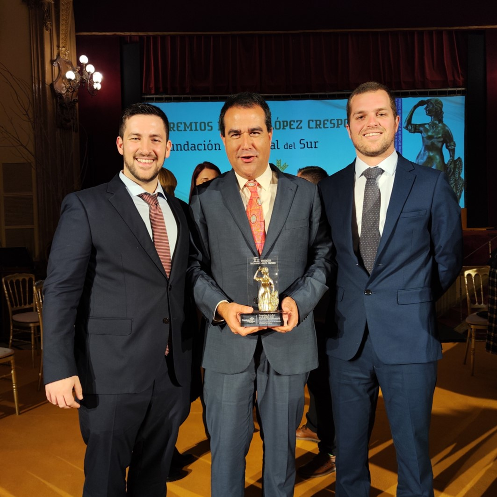
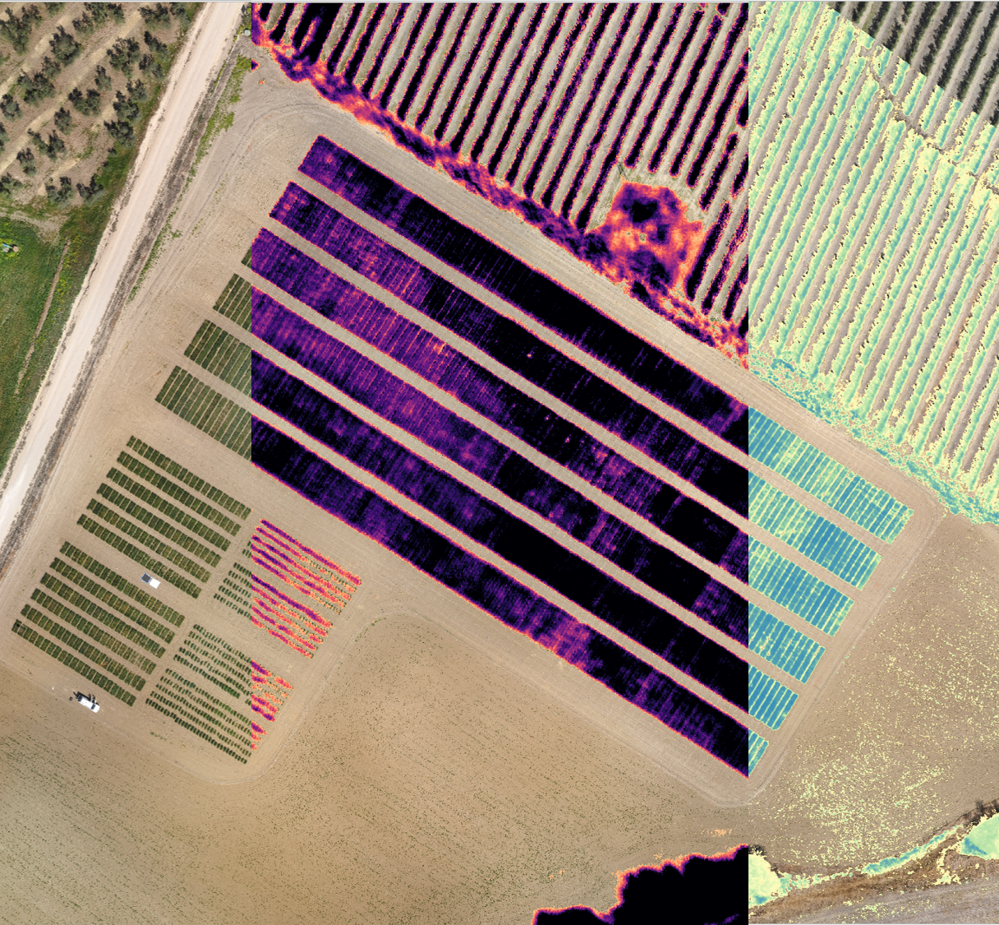
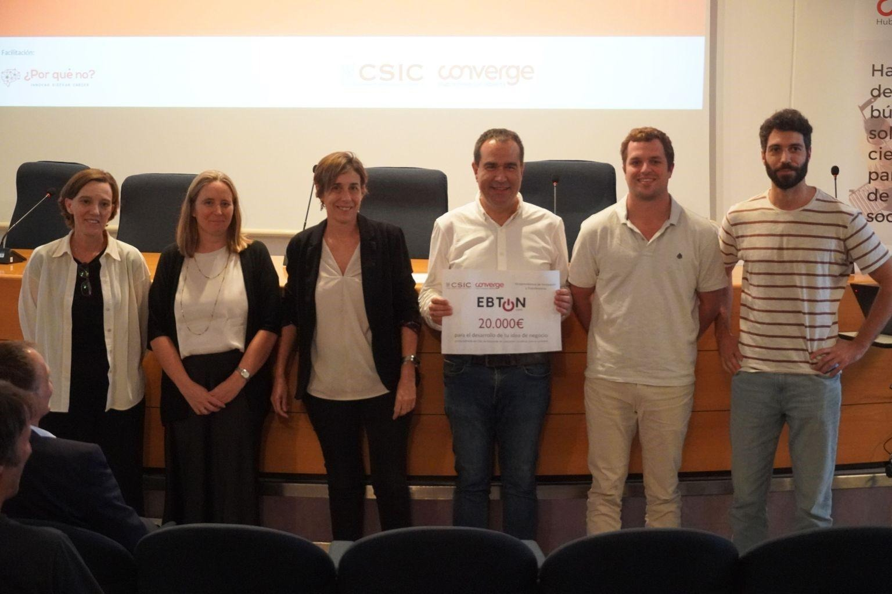
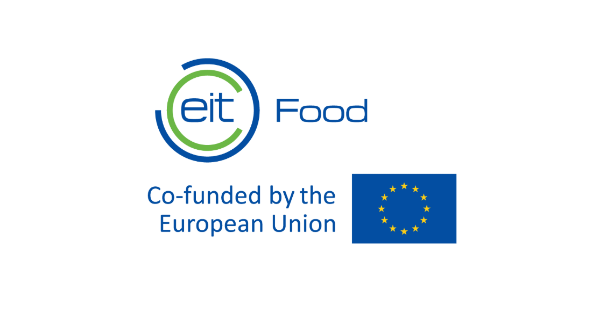

The STIMA2 project aims to optimize irrigation water use efficiency in almond cultivation using drones with thermal cameras, low-cost agroclimatic stations, and IoT sensor networks. Awarded in the R&D&I category for Agri-food activity.
View details →
Awarded Matrícula de Honor for the Master's thesis on radiometric calibration of thermal infrared cameras on UAVs. The work reduced temperature error from 6°C to less than 0.5°C between aerial and ground measurements.
View details →
Won a €20,000 prize for the creation and initial management of IrriSimple / 4DFarms — a technology-based company focused on irrigation consulting using LiDAR and thermography as primary decision-support tools for farmers.
View details →
Won a €40,000 grant through the Market Experts to Support RTOs on Technology Transfer Process programme. TechBridge focuses on equipping RTOs with market knowledge to position technologies in suitable commercial niches, validating IrriSimple's commercial viability.
View details →